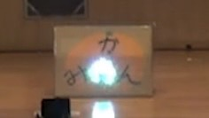

鳩山祭だったｺﾝ。
ｺﾝｺﾝ！
今日は鳩山祭公演の振り返りをするｺﾝ！
というわけで、ベレト、今回もよろしくだｺﾝ。
─────おっけー、よろしく。
じゃあ、まず最初に、Aチームの公演を振り返ってみるｺﾝ。
この公演にベレトは何してたｺﾝか？
─────照明操作の他に、フレディ役と、天使役で出たよ。
これは…フレディだｺﾝね！
楽しそうな役だｺﾝ。
フレディって、あのフレディ・マーキュリーの事ｺﾝか？
─────ううん。違うよ。侵略者の同胞の名前だよ。
そうだったｺﾝね。
Aチームの公演のおきにいりポイントってなんだｺﾝか？
─────ピエールのお茶漬けの下りかな。あれ、実話なんだ。その実話を本人が音響卓を飛び出して舞台に行って再現してたんだ。
へぇぇ。
面白いｺﾝね。
僕は信長との宴会のシーンが好きだｺﾝ。
あの酒のノリが大好きだｺﾝよ。
─────BOSSの寝る直前のセリフで僕も笑っちゃった。
あのセリフ、凄くリアルだったｺﾝ。
酒飲みの役が合いそうだｺﾝ。
─────そうだね。
そしたら、次に劇団「だんわしつ」の公演を振り返るｺﾝ。
─────OBの団体だね。
そうだｺﾝね。
渡辺君に門倉さんが言ってたセリフ、ベレトたちにすごく刺さってたように見えたｺﾝ。
─────うっ。
「彼女も無し」のセリフ、凄く刺さってたｺﾝ。
─────オーバーキルやめろぉぉぉぉぉ！
ごめんだｺﾝ。
ドア蹴っ飛ばして入ってきたり、アメリカンコメディみたいで楽しかったｺﾝ。
─────そうだね、色んな所にネタがあって面白かったね。
讃歌と3課の言葉遊び、おもしろかったｺﾝ。
─────その後って…
そういえば、ここでも「彼女も無し」が刺さってたｺﾝ。
─────うわぁぁぁぁやっぱり来たぁぁ！！
あれ、ベレトが死にかけだｺﾝ。
ボクはただ公演の振り返りをしていただけだｺﾝよ。
ほら、ベレト、Bチームの振り返りするｺﾝよ。
─────...はい。
Bチームはベレトは何してたｺﾝ？
─────シュブル役と、農家のじいちゃん役で出たよ。
ちゃんと出てたｺﾝ。
そういえば、転んでなかったｺﾝか？
─────こけた。
やっぱりｺﾝ。
まぁでも無事そうで良かったｺﾝ。
AチームとBチームで演出の違いがあって良かったｺﾝ。
一番好きなシーンってなんだｺﾝか？
─────僕は信長と明智（邪悪なる邪神）の殺陣が好きだよ。
格好良かったｺﾝね！
この二人の殺陣、凄くうまかったｺﾝ。
─────きつねはどのシーンが好き？
僕は、一番最後のアルマゲドンをうたっているシーンが好きだｺﾝ。
─────あの堂々とした移動も相まって面白かったよね。
衣装も凝ってて良かったｺﾝ！
─────衣装担当が夜なべしてスーツケースと共に大学に来て...って頑張ってたからね。
寝てないｺﾝ？
─────うん。
寝ないとだめだｺﾝ！！
─────まぁまぁ落ち着いて。
カボチャマシン、あれって作ったｺﾝか？
─────うん。あれは手作りだよ。

あれすごかったｺﾝ。
今回の舞台は全体的に凝ってたｺﾝね。
─────演出のｲﾑﾙﾀ先輩が頑張ってたからね。
なるほどだｺﾝ。
何はともあれ成功して良かったｺﾝね。
─────うん。
鳩祭がおわって新体制になったでんげきを、これからもよろしくだｺﾝ！
じゃあね～～